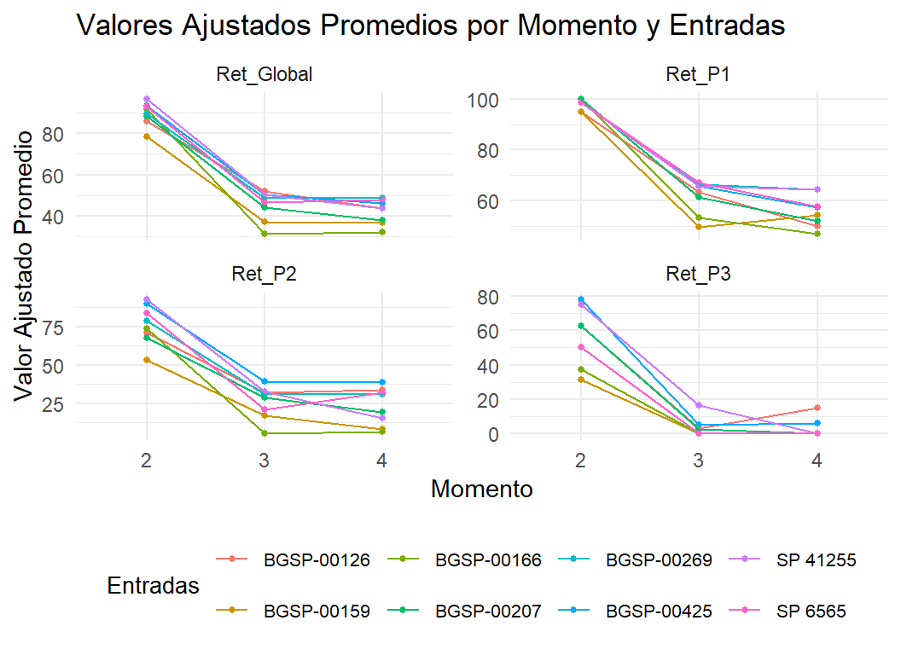

Capítulo 2 Caracterización de entradas de algodón (Gossypium hirsutum L.) del banco de germoplasma de INTA mediante caracteres morfo-fisiológicos
2.1 Introducción
Upland cotton (Gossypium hirsutum L.) is one of the most important natural fiber crops worldwide, playing a crucial role in the global textile industry. Argentina ranks as the second most important cotton fiber crop in Latin America after Brazil, with their production concentrated mainly in the northeastern provinces of Santa Fe, Chaco, and Santiago del Estero. Cotton cultivation not only satisfies domestic demand but also contributes to export markets, supplying countries such as Pakistan, Vietnam, Turkey, China, Indonesia, Bangladesh and others (Paytas et al., 2023; ICAC, 2025). During the 2024/25 growing season, Argentina reached approximately 683,000 hectares of planted cotton, with Santa Fe showing a 26% increase compared to the previous season and accounting for 34% of the national planted area, highlighting its growing importance in the national production system (ICAC, 2025; Zorzon, 2025).
With the creation of the Instituto Nacional de Tecnología Agropecuaria (INTA), and the implementation of its cotton breeding program in 1956, efforts were directed toward improving yield potential, fiber quality, and genetic resistance to major diseases such as bacterial blight (Xanthomonas citri subsp. malvacearum), blue disease (Cotton leafroll dwarf virus), and fusarium wilt (Fusarium oxysporum f. sp. vasinfectum) (Royo et al., 2007; Scarpin et al., 2022; Scarpin et al., 2023). Significant genetic progress has been achieved in traits such as lint yield, lint percentage, and the number of bolls per plant, without compromising fiber quality (Scarpin et al., 2022; Scarpin et al., 2023). However, sustained progress remains essential to cope with diverse environmental conditions and to satisfy the increasing demand for cultivars adapted to mechanized production systems.
In northern Santa Fe, where most production relies on the stripper-harvesting system, there is an increasing demand for cultivars with compact architecture and reduced vegetative branching to improve mechanized harvest efficiency and minimize fiber contamination. The introduction of the “stripper-type” harvester Javiyú, developed by INTA Reconquista, revolutionized cotton harvesting by replacing manual labor with efficient mechanized techniques (Pilatti et al., 2021). In parallel, technological innovations such as narrow-row and high-density systems have enhanced cotton production. Among producers, the most widely adopted configuration consists of 52-cm row spacing and plant densities of about 200,000 plants per hectare (Paytas et al., 2011). These technological changes underscore the need for cultivars specifically adapted to stripper-based harvesting systems and their associated management practices.
A fundamental step in breeding programs designed to meet these demands is the characterization of available germplasm to identify parents with complementary traits. INTA’s cotton germplasm collection, managed by the National Genetic Resources Network (REDGEN), currently conserves more than 700 accessions, mainly of G. hirsutum, with smaller representations of G. barbadense and G. barbadense var. brasiliensis (Arriel et al., 2023). This genetic diversity constitutes a valuable resource for the development of cultivars adapted to local agroecological and mechanization-oriented systems, and its relevance is further reinforced by regional initiatives such as the +Cotton project coordinated by FAO and the Brazilian Cooperation Agency (ABC), which underscore the strategic importance of conserving and characterizing Latin American germplasm to support breeding efforts focused on climate resilience and fiber quality improvement (FAO and ABC, 2025).
Cotton yield is a complex trait determined by the interaction of multiple components, including boll number, boll weight, lint percentage, and seed index, all of which are strongly influenced by canopy structure, source–sink relationships, and environmental conditions during the growing cycle (Pettigrew, 2004; Constable and Bange, 2015). Physiological traits such as photosynthetic efficiency, biomass accumulation, and assimilate partitioning to reproductive organs have been shown to play key roles in determining lint yield and fiber quality (Constable and Bange, 2015). In this context, parameters such as photosynthetic rate, stomatal conductance, leaf chlorophyll status (commonly estimated through SPAD readings), and vegetative and reproductive biomass provide valuable information to interpret genotypic differences in growth dynamics and yield determination. Therefore, integrating morpho-physiological characterization with traditional agronomic and fiber quality evaluation provides a more comprehensive understanding of genotypic performance. This integrative approach is particularly relevant for identifying parental lines suited to the specific production systems of northern Argentina, where yield stability and mechanical harvest efficiency depend on optimized plant architecture and reproductive balance.
However, despite the relevance of cotton production in Argentina and the genetic progress achieved through breeding, there is still limited availability of cultivars specifically adapted to stripper harvesting and narrow-row configurations. Moreover, although several studies have characterized cotton germplasm for general agronomic and fiber traits (Royo, 1998; Royo et al., 2003; Klein et al., 2011), few of them have focused on morphological and physiological attributes directly related to adaptation under these management conditions (Diaz et al., 2011). This dual limitation, restricted availability of adapted materials and scarce characterization targeted to mechanized systems, hinders the identification and use of parental lines that combine favorable yield, fiber quality, and plant architecture for efficient mechanized production in northern Argentina.
Multivariate statistical approaches, including principal component analysis (PCA) and hierarchical clustering using Gower’s distance, have been widely used to explore complex phenotypic datasets and reveal underlying patterns of variation (Spoljaric et al., 2018; Sarwar et al., 2021; Klein et al., 2022; Ullah et al., 2022; Mangi et al., 2024; Anwar et al., 2025). These methods enable the joint assessment of quantitative and qualitative traits, facilitating the identification of relationships among accessions and the delineation of groups sharing similar morphological, agronomic, or fiber quality characteristics. Including these analyses provides a robust framework for identifying genetically divergent parental lines that combine desirable yield, fiber, and architectural traits, which are essential for modern mechanized production systems.
Therefore, this study aimed to conduct a comprehensive evaluation of a diverse set of cotton accessions, with specific aims to (i) characterize morphological, yield, and fiber quality traits; (ii) analyze physiological parameters and assimilate partitioning in selected contrasting genotypes; and (iii) identify promising parental lines for breeding populations targeting improved adaptability to contrasting environments and mechanized production systems.
2.2 Objetivos
Caracterizar entradas de algodón del banco de germoplasma de INTA con diferente procedencia mediante caracteres morfológicos relacionados al rendimiento.
Evaluar procesos fisiológicos que intervienen en la determinación del rendimiento de fibra de entradas de algodón del banco de germoplasma de INTA.
2.4 Experimental site and plant material
The study was carried out at the Instituto Nacional de Tecnología Agropecuaria (INTA), Reconquista Experimental Station, located in Santa Fe province, Argentina (29°15’ S, 59°44’ W, 50 m a.s.l.). Experiments were carried out during the 2018–2020 growing seasons under greenhouse conditions.
A total of 26 cotton accessions from the INTA cotton germplasm bank (Sáenz Peña, Chaco, Argentina) were evaluated (Table 1). These accessions were selected based on their diverse geographical origins and contrasting performance for yield and fiber quality traits according to information provided by the germplasm bank. The set included materials from Argentina, Australia, Cameroon, Chad, China, Ivory Coast, Pakistan, Senegal, and the United States.
The plants were grown in 5 L pots filled with 2200 g of undisturbed soil (pH 6.7, available P: 165.7 mg kg⁻¹, Na⁺: 0.6 cmol⁺ kg⁻¹, K⁺: 0.8 cmol⁺ kg⁻¹, Ca²⁺: 27.0 cmol⁺ kg⁻¹, Mg²⁺: 2.2 cmol⁺ kg⁻¹, NH₄⁺: 76.3 mg kg⁻¹, NO₃⁻: 86.1 mg kg⁻¹) and 400 g of commercial substrate (GrowMix Multipro). Pots were irrigated regularly to maintain moisture close to field capacity.
Experiments were arranged in a randomized complete block design (RCBD), with each experimental unit consisting of one plant per pot. The design was selected to minimize potential spatial variability within the greenhouse environment, particularly light and temperature gradients, and it was consistently applied all measurements described below. To ensure comparability among accessions under controlled conditions, three independent replications were established, each represented by one plant per accession.
Entradas | Procedencia | Entradas | Procedencia |
|---|---|---|---|
BGSP-00166* | Argentina | BGSP-00748 | China |
BGSP-00177 | Argentina | BGSP-00752 | China |
BGSP-00192 | Argentina | BGSP-00755 | China |
BGSP-00193 | Argentina | BGSP-00759 | China |
BGSP-00194 | Argentina | BGSP-00779 | China |
BGSP-00207* | Argentina | BGSP-00067 | Costa de Marfil |
BGSP-00269* | Argentina | BGSP-00028 | EEUU |
SP 41255* | Argentina-Línea avanzada | BGSP-00145 | EEUU |
SP 6565* | Argentina-Línea avanzada | BGSP-00159* | EEUU |
BGSP-00514 | Australia | BGSP-00425* | EEUU |
BGSP-00072 | Camerún | BGSP-00428 | EEUU |
BGSP-00088 | Camerún | BGSP-00715 | Pakistán |
BGSP-00070 | Chad | BGSP-00126* | Senegal |
2.5 Phenotypic diversity of cotton germplasm: morphological, yield and fiber quality traits
In this study, an initial characterization of 26 cotton accessions (Table 1) was conducted. Morphological, phenological, yield, and fiber quality traits were evaluated as summarized in Table 2.
At the cut-out reproductive stage (identified when the number of nodes above the last white flower on the main stem was fewer than four (Bourland et al., 1992)), qualitative morphological traits, such as plant shape, canopy type, flowering type (observed on the lowest fruiting branch; classification based on boll proximity), leaf shape, trichome density, bract type (for the boll at the first fruiting position), and boll shape, were recorded using standardized upland cotton descriptors (UPOV, 2018). At maturity (when all capsules were open), quantitative morphological traits were measured, including plant height (HP), number of nodes on the main stem (STEMNN), number of monopodial (vegetative) branches (MONON), number of sympodial (reproductive) branch nodes (SYMNN), distance from the first reproductive position to the main stem (DFRP) and first fruiting branch position, recorded both as stem node number (FFBN) and height (FFBH).
Each plant was harvested individually to determine seed cotton yield (SCY), lint yield (LY), lint percentage (LP), boll weight (BW), and boll number per plant (BN). Fiber quality traits, including fiber length (FL), strength (FS), micronaire (MIC), and fiber uniformity index (FU), were measured using a High Volume Instrument (HVI Uster 1000, APPA – Reconquista, Santa Fe) with pooled samples from three replicates.
Phenological traits were determined based on the number of days from seedling emergence to key developmental stages, including first square (DFS), first flower (DFF), cut-out (DCO), first boll opening (DBO), and maturity (DM).
Trait category | Trait | Abbreviation | Unit | Description |
|---|---|---|---|---|
Morphological (Qualitative) | Plant shape, canopy, flowering type, leaf shape, trichome density, bract type, boll shape | - | - | Scored according to Upland cotton descriptors |
Morphological (Quantitative) | Plant height | HP | cm | Height of the plant at maturity in cm |
Main stem nodes | STEMNN | count | Number of nodes on main stem | |
Monopodial branches | MONON | count | Number of monopodial (vegetative) branches | |
Sympodial branch nodes | SYMNN | count | Number of sympodial branch nodes | |
First fruiting branch position (node) | FFBN | count | First fruiting branch position measured by number of stem node | |
First fruiting branch position (height) | FFBH | cm | First fruiting branch position measured by height in cm | |
Distance to first reproductive position | DFRP | cm | Distance from the first reproductive position to the main stem in cm | |
Phenological | Days to first square | DFS | days | From seedling emergence to first square |
Days to first flower | DFF | days | From seedling emergence to first flower | |
Days to cut-out | DCO | days | From seedling emergence to Cut Out (Bourland et al., 1992) | |
Days to boll opening | DBO | days | From seedling emergence to first boll opening | |
Days to maturity | DM | days | From seedling emergence to physiological maturity | |
Yield Components | Seed cotton yield | SCY | g plant⁻¹ | Total seed cotton weight per plant |
Lint yield | LY | g plant⁻¹ | Total lint weight per plant | |
Lint percentage | LP | % | (Lint weight / Seed cotton weight) × 100 | |
Boll weight | BW | g | Average weight of harvested bolls | |
Boll number per plant | BN | bolls plant⁻¹ | Total number of bolls per plant | |
Fiber Quality | Fiber length | FL | mm | Upper half mean length (UHML), measured with HVI |
Fiber strength | FS | g tex⁻¹ | Measured with HVI | |
Micronaire | MIC | - | Measured with HVI | |
Fiber uniformity | FU | % | Uniformity index, measured with HVI |
2.6 Yield, fiber quality, physiological, and biomass partitioning analysis of contrasting cotton accessions
Eight accessions were selected (marked with an asterisk in Table 1) based on their contrasting performance in yield components, especially LP, and fiber quality. Some accessions with compact plant architecture and low MONON were also included. These accessions were subjected to a more detailed evaluation of yield and fiber quality variables and physiological processes influencing yield components. Two independent experiments were conducted at different time points, each including nine replicates per accession, to increase the representativeness of fiber quality parameters and enhance statistical precision. The yield and fiber quality variables described in the section “Phenotypic diversity of cotton germplasm: morphological, yield and fiber quality traits” were also recorded, along with the additional variables listed in Table 3: seed number per boll (SNPB), lint index (LI), and seed index (SI).
These same eight accessions were used to evaluate physiological traits and biomass partitioning as summarized in Table 3. Destructive sampling was performed at four phenological stages (moments): first square (M1), first flower (M2), first open boll (M3), and maturity (M4). Plants were partitioned into vegetative components (stem, vegetative branches and leaves) and reproductive structures (sympodial branches, squares, flowers, green and open bolls, seed, and fiber). Samples were oven-dried at 65 °C until constant weight to determine total and partitioned biomass. The experiment followed a RCBD with split-plot arrangement, with phenological stages as the main plots and accessions as the subplots.
Flowering dynamics and reproductive structure retention were assessed by mapping all reproductive positions following previous studies (Kerby et al., 2010).
Physiological traits, including net photosynthetic rate (PN), stomatal conductance (gs), and chlorophyll content (SPAD), were measured at three moments: at first flower (M2), and 15 and 30 days thereafter, using a LI-COR 6400 photosynthesis system (PN and gs) and a Minolta SPAD 502 chlorophyll meter (SPAD). Four replications were included for each accession. Four fully expanded leaves located at the upper canopy (apical leaves) were sampled and labeled at the beginning of the experiment. These same four leaves were measured at each evaluation time. Measurements were made under light intensity ranging from 900 to 1500 μmol photons m−2 s−1 between 11:00 and 13:00 h.
Trait category | Trait | Abbreviation | Unit | Method |
|---|---|---|---|---|
Biomass Partitioning | Total biomass | TB | g plant⁻¹ | Sum of vegetative and reproductive biomass |
Vegetative biomass | VB | g plant⁻¹ | Sum of stem, vegetative branches and leaves | |
Reproductive biomass | RB | g plant⁻¹ | Sum of sympodial branches, squares, flowers, green and open bolls, seed, and fiber | |
Physiological | Net photosynthesis rate | PN | µmol CO₂ m⁻² s⁻¹ | LICOR 6400 gas exchange system |
Stomatal conductance | gs | mol H₂O m⁻² s⁻¹ | LICOR 6400 gas exchange system | |
Chlorophyll content | SPAD | SPAD units | Minolta SPAD 502 | |
Reproductive Dynamics | Global retention | GR | % | Mapping according to Kerby et al. (2010). Global retention as the ratio of the total number of reproductive structures retained by the total number of reproductive positions generated per plant |
First position retention | R1P | % | Mapping according to Kerby et al. (2010). Retention as the ratio of the total number of reproductive structures retained in the first positions to the total number of reproductive positions generated in those same positions per plant | |
Additional Yield Tratis | Seed number per boll | NSPB | count | Number of seeds per boll |
Lint index | LI | g | Weight of lint from 100 seeds | |
Seed index | SI | g | Weight of 100 seeds |
2.7 Statistical analysis
All statistical analyses were performed using R software (R Core Team, 2023). The significance level was set at 95% (p ≤ 0.05) for all tests.
For the characterization of the 26 accessions, the normality of quantitative traits was verified using the Shapiro–Wilk test. Analysis of variance (ANOVA) was then applied to determine differences among accessions, followed by Fisher’s least significant difference (LSD) test for mean comparison (Luo, 2024).
For qualitative morphological traits, the relative frequencies of each descriptor were analyzed. Additionally, hierarchical cluster analysis was performed using Gower’s distance metric and the Ward.D method, integrating qualitative and quantitative traits. Homogeneous groups of accessions were visualized in dendrograms and heat maps generated with the cluster, dplyr, and ComplexHeatmap packages (Gu, 2022; Wickham et al., 2023; Maechler et al., 2025).
For the eight contrasting and selected accessions, data on yield, yield components, and fiber quality traits were analyzed using linear mixed models (LMM) with the nlme package (Pinheiro et al., 2025), applying the restricted maximum likelihood (REML) method. Accessions were considered as fixed effects, while experiment and replication were treated as random effects. When significant differences were detected, multiple comparisons were performed using Fisher’s LSD test. Associations among traits were examined using Spearman’s correlation coefficients (Conigrave, 2023).
For biomass partitioning and reproductive retention, LMM adapted to a split-plot design were applied, with moment, accession, and their interaction (Moment:Accession) as fixed effects. Random effects accounted for experiment, blocks, and moments (main plots). Specific variance structures (varIdent) were implemented when heteroscedasticity between measurement times was detected.
Physiological traits were analyzed as repeated measures over time. The models included moment, accession, and their interaction (Moment:Accession) as fixed effects, with block and individual (pot number) as random effects. This approach captured temporal variation and accession-specific dynamics across measurement dates.
Finally, to explore the overall diversity among accessions, a principal component analysis (PCA) was conducted.
2.8 Resultados
2.8.2 Qualitative morphological traits
The frequency distribution of qualitative morphological descriptors among the evaluated accessions is shown in Fig. 1.1. Boll shapes were predominantly ovate (88.5%), followed by circular (7.7%) and broad-elliptic (3.8%). All accessions had normal bracts. Canopy types were mainly medium (69.2%) and open (23.1%), with a few compact forms (7.7%). Regarding flowering type, semi-clustered plants were the most frequent (69.2%), followed by non-clustered (23.1%) and clustered types (7.7%). Lamina were mostly flat (96.1%) and leaves as palmate (96.1%), with a small proportion of cup-shaped (3.9%) and okra-type (3.9%) leaves. Pubescence was predominantly medium (76.9%), with weak and strong levels each accounting for 11.5%. Finally, plant shape was mainly cylindrical (61.5%) and conical (38.5%). Plant shape descriptors reflected qualitative differences observed under greenhouse conditions and should be interpreted as exploratory indicators of architectural diversity. The descriptors of the evaluated cotton germplasm accessions are summarized in Table S1 (Supplementary Material).
2.8.3 Quantitative morphological traits, yield and its components and fiber quality
All mean values of evaluated morphological quantitative traits are shown in Table S2. Quantitative morphological traits varied significantly among accessions, with HP ranging from 89.0 to 126.3 cm and STEMNN from 13.0 to 17.0. The MONON ranged from 0.3 to 2.7, whereas SYMNN varied from 9.7 to 13.3. The FFBN ranged from 3.7 to 5.7, and FFBH varied from 25.0 to 40.7 cm. The DFRP ranged from 3.9 to 14.3 cm. Yield, fiber quality, and phenological traits also showed wide variability among accessions, with SCY ranging from 14.3 to 33.5 g plant⁻¹, LY from 4.6 to 12.3 g plant⁻¹, BW from 2.6 to 4.7 g, and BN from 4.7 to 8.7. Fiber quality traits varied for FL (25.1–33.9 mm) and FS (21.5–37.6 g tex⁻¹). Phenological traits ranged from 19 to 27 DFS, 47 to 55 DFF, 68 to 76 DCO, 97 to 105 DBO, and 118 to 133 DM.
To combine all evaluated traits, a hierarchical cluster analysis was performed using Gower’s distance. Fig. 1.2 shows the resulting heatmap together with the dendrograms generated by the Ward.D method. Based on the observed patterns, two main clusters were distinguished. Cluster one included accessions with a conical plant shape and non-clustered flowering, some of which exhibited superior fiber quality. Cluster two grouped accessions with a more compact canopy and clustered flowering, generally associated with a higher lint percentage and greater boll number.
Meeting the simultaneous demands for fiber quality, yield and adaptation to intensive management practices requires expanding the genetic bases available to breeders. INTA’s germplasm collection, with its documented diversity in morphological attributes (leaf morphology, bract morphology, boll shape, leaf pubescence, presence or absence of leaf nectaries, stormproof traits), yield components and fiber quality (Royo et al., 2003; Klein et al., 2011; Spoljaric et al., 2018; Scarpin et al., 2019; Arriel et al., 2023) offers a unique opportunity to identify parental for future breeding populations. Almost all traits exhibited phenotypic diversity, with values varying significantly among accessions, highlighting the potential of this germplasm not only for fiber improvement but also for breeding programs aimed at enhancing productivity and developing varieties suited to specific production systems. The variability shown in this work is consistent with reports from U.S. germplasm collections, where extensive allelic diversity has been documented (Hinze et al., 2025), and from Asian collections, including studies in Pakistan that revealed significant genetic variation in yield and fiber quality traits (Farooq et al., 2017). In contrast, recent genomic analyses in China have highlighted the narrow genetic base and relatively low diversity of cultivated cotton, underscoring the importance of broadening germplasm resources for future breeding (Li et al., 2023). Importantly, initiatives in Latin America, such as the +Cotton project (FAO-ABC), have also emphasized the value of regional germplasm diversity for breeding programs, particularly in the context of climate resilience and fiber quality improvement (FAO and ABC, 2025).
2.9 Yield, fiber quality, physiological, and biomass partitioning analysis of contrasting cotton accessions
2.9.1 Yield components and fiber quality
The accessions selected for a more detailed evaluation of yield traits and fiber quality are indicated with an asterisk in Table 1. Selection was based primarily on accessions belonging to different clusters according to the hierarchical cluster analysis (Fig. 1), as well as on the data presented in Table S2. Priority was given to accessions with marked contrasts in yield and their components, particularly lint percentage, as well as fiber quality. In addition, some accessions with lower number of monopodial (vegetative) branch and compact canopy structure were included, such as accession BGSP-00166.
The selected cotton accessions showed significant differences in all traits related to yield and fiber quality (p < 0.05, Table 4). Accession SP-41255 had the highest mean values for SCY, LY, LP, and BN, with values of 34.2 g plant⁻¹, 15.8 g plant⁻¹, 45.8%, and 9.2 bolls plant⁻¹, respectively. However, this accession had the lowest mean value for SI, with 7.7 g. BGSP-00159 had the lowest mean SCY with 26.2 g plant⁻¹. BGSP-00166 showed the lowest mean values for LY, LP, MIC, and BN (8.6 g plant⁻¹, 31.1%, 3.2, and 5.8 bolls plant⁻¹, respectively), yet it showed the highest mean values for BW, SI, FL, FS, and FU (4.6 g boll⁻¹, 11.5 g, 33.2 mm, 37.3 g tex⁻¹, and 85.8%, respectively). BGSP-00269 had the lowest mean values for BW, SNPB, and FL (3.4 g boll⁻¹, 22.8 seeds boll⁻¹, and 28.3 mm, respectively), while having the highest mean values for LI and MIC (6.5 g and 4.3, respectively). BGSP-00425 had the highest mean SNPB with 30.6 seeds boll⁻¹, while having the lowest mean values for LI and FU, with 4.0 g and 82.2%, respectively. BGSP-00207 had the lowest mean values for FL and FS, with 28.3 mm and 29.2 g tex⁻¹, respectively. Notably, accessions BGSP-00166 and SP-41255 were significantly different for nearly all studied traits except SNPB.
These results indicate that there is phenotypic variation among the contrasting cotton accessions evaluated in terms of both yield and fiber quality. These findings are consistent with previous reports documenting wide variability in cotton germplasm (McCarty et al., 2006) and reinforce the well-known trade-off between yield and fiber quality (Li et al., 2023). The greatest variation was observed for LY, BN, LI, SI, LP, and BW traits, while less variation occurred for MIC, SNPB, SCY, FS, and FL. In contrast, the least variation was observed in FU. McCarty et al. (2006) also found diversity with wide ranges for SCY, LY, BW, LP, MIC, FL, and FS.
Table S3 shows the Spearman correlation values for fiber yield traits, their components, and fiber quality. Several phenotypic correlations were statistically significant. Correlations greater than 0.80 were considered strong, those between 0.40 and 0.80 moderate, and those below 0.40 weak. LY showed a strong positive correlation with BN and a moderate positive correlation with BW. LP showed moderate positive correlations with LY and BN but a moderate negative correlation with SI. FL showed moderate negative correlations with LY, indicating that as fiber yield increases, fiber length decreases. When we analyzed the correlations within the cotton germplasm collection, LY exhibited a positive correlation with LP, BW, and BN, while we observed the strongest association with the latter. Scarpin et al. (2022) also identified this association, demonstrating that the rise in LY is primarily influenced by an increase in BN, driven by enhanced retention, and secondarily by an increase in LP and BW. Meredith (1984) reported positive correlations between LP and LY, BN, and LI, while negative correlations were found with SI, BW, FL, FS, and MIC. We obtained similar results, except for MIC, which exhibited a positive correlation. Collectively, these findings suggest that breeding programs aiming to increase LY should focus on BN enhancement. Increased BN may be associated with higher LP, leading to higher LI and MIC, while decreasing SI, BW, FL, and FS. However, achieving a balance with LP is necessary to maintain fiber quality traits. This can be accomplished by increasing LP to a level that does not excessively reduce traits such as FL or FS.
2.10 Biomass partitioning, reproductive retention and physiological analysis
The temporal dynamics of biomass accumulation and its partitioning among organs in eight contrasting cotton accessions are illustrated in Fig. 2. During early development (M1–M2), vegetative biomass (VB), mainly stems and leaves, represented the largest proportion of total dry matter. From flowering onward (M3–M4), reproductive structures became the dominant contributors to total biomass, evidencing a clear shift from vegetative to reproductive allocation (Fig. 2.1). Both moment and accession effects were highly significant (p < 0.001, Table S4), as well as their interaction, indicating differential growth dynamics among accessions.
At maturity (M4), clear differences among accessions were observed in the distribution of biomass components. BGSP-00207 exhibited the greatest accumulation in reproductive branches, whereas BGSP-00166 showed the lowest biomass accumulation in both vegetative and reproductive branches, consistent with its compact plant architecture compared to the more open structure of BGSP-00207. SP-41255 and BGSP-00126 accumulated the highest vegetative branch biomass (Fig. 2.2). Overall, the figure highlights how cotton accessions differ in their temporal patterns of biomass partitioning and organ-specific allocation throughout development. These differences observed in vegetative and reproductive branch biomass among accessions align with previous studies suggesting that cotton plant architecture, including branching patterns, is influenced by genetic factors (McGarry et al., 2016; Sun et al., 2022; Huang et al., 2022). Genotypic variation may therefore contribute to the contrasting behaviors observed in this study, such as the reduced vegetative and reproductive biomass in accession BGSP-00166. However, plant density also exerts a strong influence on biomass partitioning. Li et al. (2019b) demonstrated that higher plant densities increase intra-specific competition for light and nutrients, leading to reduced vegetative branching and a shift toward reproductive allocation, whereas lower densities allow greater lateral expansion and promote vegetative branch development. These findings indicate that both genetic background and management practices interact to shape the balance between vegetative and reproductive growth, highlighting the relevance of integrating genotypic and agronomic perspectives in cotton breeding programs.
Morpho-physiological characterization highlighted differences in plant architecture and biomass partitioning, traits potentially relevant for mechanized production. Accessions with compact canopy and reduced monopodial branching, such as BGSP-00166, showed allocation patterns consistent with improved harvest efficiency and suitability for high plant density, in line with studies emphasizing the role of architecture in the efficiency of mechanized plant harvest (Huang et al., 2022; Madhu et al., 2023).
The reproductive retention patterns observed in eight contrasting cotton accessions are shown in Fig. 3. The temporal dynamics of global (GR) and first-position (R1P) retention across phenological stages (M2–M4), revealing a consistent decline from first flower (M2) to maturity (M4) as can be seen in Figure 3.1. This reduction reflects the progressive accumulation of dry matter in reproductive organs and the resulting competition for assimilates. Fig. 3.2 compares accessions at maturity (M4), highlighting clear differences in both GR and R1P values. BGSP-00269, SP-6565, BGSP-00425, and SP-41255 maintained higher GR at maturity, while BGSP-00269 and SP-41255 also exhibited the greatest R1P, indicating greater efficiency in early boll set and fruit retention. In contrast, BGSP-00166 and BGSP-00159 displayed the lowest retention values in terms of GR and R1P.
The analysis of reproductive structure retention (Table S5) confirmed the visual trends discussed previously, showing significant effects of moment and accession for GR (p = 0.0017) and a significant Moment:Accession interaction (p = 0.0119). These results indicate that the genotypes evaluated differed in their capacity to retain fruiting structures across reproductive stages, contributing to the observed variation in yield components.
The spatial distribution of bolls within the plant canopy has been consistently linked to both yield and fiber quality. Bolls set in early fruiting positions or in the mid-section of the plant (nodes 9–14) generally exhibit greater fiber length and strength, while those located in upper internodes (nodes 16–22) tend to produce lower micronaire values (Davidonis et al., 2004; Nie et al., 2019; Zhang et al., 2021). This positional effect reflects differences in assimilate availability and growth conditions, which directly influence boll weight and fiber maturity. Consequently, accessions that combine high global retention with strong first-position retention, such as BGSP-00269 and SP-41255 (Fig. 3), not only secure a larger number of fruits but also retain those bolls most likely to contribute superior fiber properties. Findings from Mao et al. (2015) are consistent with this interpretation, showing that improvements in fiber strength under high plant density and mepiquat chloride application were linked to a greater retention of bolls in lower and middle fruiting positions.
The estimated temporal variation of key physiological traits, PN, gs, and SPAD, measured at first flower (M2) and at 15 and 30 days thereafter in eight cotton accessions is shown in Fig. 4. All three variables showed a clear decline over time. At M2, accessions BGSP-00269 and BGSP-00425 exhibited the highest mean PN; however, their rates declined more sharply thereafter compared with the other genotypes, which could explain the lower biomass accumulation observed in BGSP-00425. Significant effects of moments were detected for PN and SPAD (p < 0.001), whereas accession and the moment × accession interaction were significant only for PN (p = 0.012 and 0.005, respectively, Table S6). This indicates that genotypes differed mainly in their photosynthetic capacity rather than in stomatal behavior or chlorophyll content.
Physiological measurements revealed distinct accession-specific dynamics in photosynthetic rate. Although PN declined over time in all genotypes, as expected, the magnitude of this decline differed among accessions. Genotypes with steeper reductions, such as BGSP-00425, showed lower final biomass, suggesting limitations in carbon supply during boll filling. In contrast, accessions with more stable PN profiles tended to exhibit more favorable reproductive outcomes. Notably, PN rather than gs or SPAD was the main driver of physiological differences, indicating that variation in carbon assimilation capacity, rather than stomatal or chlorophyll traits, played a central role in shaping yield performance. These findings align with previous studies showing that PN is positively correlated with biomass accumulation and yield in cotton (Li et al., 2019a)
2.11 Principal Component Analysis
Principal component analysis of the significant variables revealed that the first principal component explained 55.89% of the variance, while the second component explained 14.54% (Fig. 5). Accessions located in the left quadrants, such as BGSP-00166, BGSP-00159, and BGSP-00425, were associated with higher fiber quality (FL, FS, FU) and larger seed size (SI), but lower values for yield-related traits such as SCY, LY, LI, BN, and LP. In contrast, accessions positioned on the right side of the biplot, including SP-41255, SP-6565, BGSP-00269, BGSP-00207, and BGSP-00126, were related to greater biomass production (stem, total biomass, monopodial and sympodial branches) and higher yield performance, but comparatively lower fiber quality; consistent with their higher biomass and more fruit retention described in the biomass partitioning results (Fig. 2; Fig. 3). Traits such as GR, R1P, and PN also contributed positively to the right side, reinforcing their role in yield determination. Both, PCA and correlation coefficients (Table S3) revealed the relationships among the traits within this set of genotypes. For instance, traits such as LY exhibited a strong positive correlation with BN, a moderate positive correlation with BW and LP, and a moderate negative correlation with quality traits such as FL.
Principal Component (PC) analysis routinary is used to identify similarities among the genotypes for traits in cotton (Shakeel et al., 2015; Farooq et al., 2017; Klein et al., 2022). In our study, the principal component analysis found the most contrasting accessions in terms of the measured traits; in particular, BGSP-00166 was associated with higher values of fiber quality (FL, FS, FU) and seed size (SI), whereas SP-41255 was associated with higher values in yield-related traits such as SCY, LY, LI, BN, LP. The cultivar SP-41255 stood out due to its performance, exhibiting the highest values of LP and BN, and the lowest values of BW and SI when Scarpin et al. (2022) performed a study focusing on genetic progress for yield and its components across 20 cotton cultivars. In agreement with our observations, SP-41255 was associated with superior yield-related traits, specifically higher values of LP and BN (Fig. 5). These findings are similar with the report of McCarty et al. (2006), where accessions that exhibited higher values in yield-related traits also tended to have lower fiber quality values.
Overall, the multivariate analysis supports the identification of complementary parental lines for cotton breeding programs. The contrasting profiles of BGSP-00166 and SP-41255 offer a strategic opportunity to combine fiber quality and yield potential through targeted recombination, contributing to the development of ideotypes suited for mechanized cotton production.
This integrative approach, combining agronomic, physiological, and fiber quality assessments, contributes to the early-stage characterization of germplasm and supports parental candidate identification for breeding programs oriented toward mechanized and high-density production systems.
| Entradas | Forma | Canopia | Tipo Floración | Forma | Lámina | Pubescencia | Tipo | Forma |
|---|---|---|---|---|---|---|---|---|
| BGSP-00028 | Cónica | Abierta | Individual | Palmada | Plana | Escasa | Normal | Cónica |
| BGSP-00067 | Cónica | Abierta | Individual | Palmada | Plana | Escasa | Normal | Cónica |
| BGSP-00070 | Cilíndrica | Medio | Medio Agrupada | Palmada | Plana | Media | Normal | Cónica |
| BGSP-00072 | Cilíndrica | Medio | Medio Agrupada | Palmada | Plana | Media | Normal | Cónica |
| BGSP-00088 | Cónica | Medio | Individual | Palmada | Plana | Fuerte | Normal | Cónica |
| BGSP-00126 | Cilíndrica | Medio | Medio Agrupada | Palmada | Plana | Escasa | Normal | Cónica |
| BGSP-00145 | Cónica | Medio | Individual | Palmada | Plana | Media | Normal | Cónica |
| BGSP-00159 | Cilíndrica | Medio | Medio Agrupada | Palmada | Plana | Media | Normal | Cónica |
| BGSP-00166 | Cilíndrica | Compacta | Agrupada | Palmada | Plana | Media | Normal | Cónica |
| BGSP-00177 | Cónica | Abierta | Medio Agrupada | Palmada | Plana | Media | Normal | Cónica |
| BGSP-00192 | Cilíndrica | Medio | Medio Agrupada | Palmada | Plana | Media | Normal | Cónica |
| BGSP-00193 | Cilíndrica | Medio | Medio Agrupada | Palmada | Plana | Media | Normal | Cónica |
| BGSP-00194 | Cilíndrica | Compacta | Agrupada | Palmada | Plana | Media | Normal | Cónica |
| BGSP-00207 | Cónica | Abierta | Individual | Palmada | Plana | Fuerte | Normal | Cónica |
| BGSP-00269 | Cilíndrica | Medio | Medio Agrupada | Palmada | Plana | Media | Normal | Cónica |
| BGSP-00425 | Cilíndrica | Medio | Medio Agrupada | Palmada | Plana | Media | Normal | Cónica |
| BGSP-00428 | Cilíndrica | Medio | Medio Agrupada | Palmada | Plana | Media | Normal | Redonda |
| BGSP-00514 | Cónica | Abierta | Individual | Digitada (Okra) | Plana | Media | Normal | Cónica |
| BGSP-00715 | Cónica | Medio | Medio Agrupada | Palmada | Plana | Fuerte | Normal | Cónica |
| BGSP-00748 | Cónica | Medio | Medio Agrupada | Palmada | Plana | Media | Normal | Elíptica |
| BGSP-00752 | Cónica | Medio | Medio Agrupada | Palmada | Plana | Media | Normal | Cónica |
| BGSP-00755 | Cilíndrica | Medio | Medio Agrupadas | Palmada | Plana | Media | Normal | Cónica |
| BGSP-00759 | Cilíndrica | Abierta | Medio Agrupada | Palmada | En copa | Media | Normal | Redonda |
| BGSP-00779 | Cilíndrica | Medio | Medio Agrupada | Palmada | Plana | Media | Normal | Cónica |
| SP 41255 | Cilíndrica | Medio | Medio Agrupada | Palmada | Plana | Media | Normal | Cónica |
| SP 6565 | Cilíndrica | Medio | Medio Agrupada | Palmada | Plana | Media | Normal | Cónica |
| Entradas | AP | NN | NRV | NRR | N1RR | A1RR | D1P | RB | RF | RFD | PC | NC | UHML | Str | Mic | IU | DPP | DPF | DCO | DPCA | DFC |
|---|---|---|---|---|---|---|---|---|---|---|---|---|---|---|---|---|---|---|---|---|---|
| BGSP-00028 | 106,3 (5,5) | 13,3 (0,9) | 1,0 (0,6) | 10,7 (0,7) | 3,7 (0,3) | 25,3 (0,7) | 9,3 (0,7) | 24,1 (2,0) | 8,7 (0,6) | 36,5 (0,7) | 4,3 (0,3) | 5,7 (0,3) | 30,7 | 34,0 | 3,1 | 84,1 | 25 | 51 | 74 | 118 | 163 |
| BGSP-00067 | 102,0 (4,0) | 14,7 (0,7) | 1,3 (0,3) | 11,0 (0,6) | 4,7 (0,3) | 27,0 (1,7) | 11,0 (1,5) | 23,3 (3,3) | 8,2 (1,0) | 36,0 (1,9) | 2,8 (0,2) | 8,3 (1,2) | 26,8 | 37,0 | 2,9 | 80,8 | 25 | 54 | 74 | 128 | 163 |
| BGSP-00070 | 109,3 (0,3) | 14,3 (0,3) | 1,3 (0,3) | 9,7 (0,3) | 5,7 (0,7) | 40,7 (4,2) | 9,7 (1,9) | 19,9 (1,3) | 7,7 (0,8) | 39,6 (0,8) | 3,4 (0,3) | 6,0 (0,6) | 32,5 | 31,0 | 3,8 | 84,6 | 27 | 53 | 76 | 128 | 163 |
| BGSP-00072 | 113,3 (4,3) | 17,0 (0,0) | 1,3 (0,3) | 13,3 (0,3) | 4,7 (0,3) | 27,3 (3,2) | 7,3 (1,8) | 26,3 (2,2) | 9,8 (0,9) | 38,3 (0,6) | 3,5 (0,4) | 7,7 (0,3) | 28,1 | 28,2 | 4,3 | 82,6 | 25 | 54 | 80 | 130 | 162 |
| BGSP-00088 | 104,3 (5,8) | 14,3 (0,7) | 1,7 (0,3) | 10,7 (0,3) | 4,7 (0,3) | 28,3 (2,7) | 14,3 (1,2) | 31,0 (3,2) | 11,3 (1,1) | 37,1 (0,4) | 4,4 (0,2) | 7,0 (0,6) | 31,6 | 36,5 | 3,5 | 86,2 | 25 | 54 | 78 | 135 | 163 |
| BGSP-00126 | 126,3 (3,8) | 14,9 (0,2) | 1,5 (0,2) | 11,3 (0,3) | 4,6 (0,1) | 37,4 (1,4) | 8,9 (0,9) | 16,0 (0,6) | 6,6 (0,3) | 42,9 (0,3) | 2,7 (0,2) | 6,0 (0,3) | 29,9 | 32,4 | 2,8 | 83,5 | 25 | 54 | 79 | 132 | 163 |
| BGSP-00145 | 89,0 (4,5) | 14,3 (0,3) | 1,0 (0,6) | 11,3 (0,3) | 4,0 (0,0) | 25,7 (0,9) | 9,7 (1,8) | 16,1 (3,1) | 6,1 (1,1) | 38,6 (0,7) | 3,6 (0,6) | 4,7 (0,9) | 26,9 | 26,6 | 3,5 | 80,8 | 25 | 52 | 73 | 121 | 163 |
| BGSP-00159 | 104,3 (3,6) | 14,3 (0,3) | 1,1 (0,2) | 11,0 (0,2) | 4,3 (0,2) | 31,8 (1,9) | 11,4 (0,6) | 14,3 (0,6) | 5,1 (0,2) | 36,8 (0,6) | 2,7 (0,1) | 5,2 (0,2) | 30,0 | 34,4 | 2,5 | 82,7 | 22 | 49 | 74 | 114 | 161 |
| BGSP-00166 | 109,0 (3,0) | 15,2 (0,2) | 0,8 (0,2) | 11,8 (0,3) | 4,4 (0,2) | 30,6 (1,2) | 3,9 (0,6) | 18,2 (0,5) | 5,5 (0,2) | 31,1 (0,4) | 3,6 (0,1) | 5,1 (0,2) | 33,9 | 37,6 | 2,5 | 86,1 | 23 | 52 | 74 | 124 | 163 |
| BGSP-00177 | 103,7 (3,3) | 14,3 (0,3) | 1,7 (0,3) | 10,7 (0,3) | 4,7 (0,3) | 32,7 (3,4) | 13,7 (1,7) | 24,5 (2,2) | 7,9 (0,8) | 33,0 (0,4) | 4,2 (0,8) | 6,0 (0,6) | 29,2 | 30,7 | 4,2 | 82,9 | 26 | 53 | 75 | 127 | 164 |
| BGSP-00192 | 101,3 (5,8) | 15,0 (0,0) | 1,7 (0,3) | 11,0 (0,0) | 5,0 (0,0) | 29,0 (2,1) | 11,3 (0,9) | 18,7 (3,3) | 7,1 (1,1) | 37,9 (2,0) | 3,3 (0,4) | 5,7 (0,3) | 28,2 | 31,9 | 3,5 | 83,3 | 25 | 54 | 76 | 124 | 162 |
| BGSP-00193 | 106,7 (5,5) | 15,3 (0,3) | 2,7 (0,3) | 11,3 (0,3) | 5,0 (0,0) | 30,7 (0,9) | 8,0 (1,7) | 29,4 (3,9) | 10,9 (1,4) | 38,1 (1,8) | 4,2 (0,6) | 7,0 (0,0) | 30,2 | 33,8 | 3,5 | 85,5 | 25 | 55 | 78 | 137 | 162 |
| BGSP-00194 | 92,7 (3,2) | 14,7 (0,3) | 2,3 (0,3) | 10,7 (0,3) | 5,0 (0,0) | 31,3 (0,7) | 5,7 (3,2) | 24,0 (3,1) | 9,6 (1,4) | 40,9 (0,8) | 3,7 (0,4) | 6,7 (0,9) | 29,9 | 32,6 | 3,7 | 85,0 | 25 | 55 | 75 | 118 | 163 |
| BGSP-00207 | 105,0 (8,5) | 15,3 (0,2) | 0,7 (0,2) | 12,2 (0,2) | 4,2 (0,1) | 29,4 (0,8) | 10,1 (1,0) | 16,2 (0,6) | 6,7 (0,2) | 43,6 (0,5) | 2,8 (0,1) | 5,8 (0,2) | 28,6 | 28,4 | 2,8 | 83,2 | 23 | 52 | 79 | 135 | 164 |
| BGSP-00269 | 113,0 (3,7) | 14,7 (0,2) | 1,2 (0,2) | 11,2 (0,2) | 4,4 (0,1) | 34,2 (1,6) | 8,3 (0,8) | 16,9 (0,5) | 7,1 (0,3) | 43,7 (0,5) | 2,9 (0,2) | 6,1 (0,3) | 29,2 | 33,4 | 3,9 | 84,1 | 23 | 52 | 75 | 133 | 163 |
| BGSP-00425 | 105,2 (3,3) | 13,8 (0,1) | 0,9 (0,3) | 10,8 (0,1) | 4,0 (0,0) | 25,5 (0,7) | 8,4 (0,9) | 15,1 (0,5) | 4,6 (0,2) | 31,5 (0,3) | 2,6 (0,1) | 5,8 (0,3) | 32,1 | 32,6 | 2,3 | 82,2 | 25 | 53 | 73 | 130 | 163 |
| BGSP-00428 | 105,3 (7,3) | 15,3 (0,3) | 0,7 (0,3) | 12,0 (0,6) | 4,3 (0,3) | 28,0 (2,9) | 8,7 (2,4) | 21,4 (3,6) | 8,7 (1,4) | 40,1 (0,4) | 4,3 (0,7) | 5,0 (0,6) | 25,1 | 23,1 | 4,0 | 80,0 | 23 | 49 | 74 | 113 | 163 |
| BGSP-00514 | 99,0 (8,0) | 16,0 (0,0) | 2,7 (0,3) | 12,3 (0,3) | 4,7 (0,3) | 25,0 (1,5) | 11,7 (1,7) | 28,0 (2,8) | 11,7 (1,2) | 42,3 (0,4) | 4,2 (0,2) | 6,7 (0,9) | 29,0 | 32,0 | 2,7 | 83,6 | 23 | 52 | 76 | 117 | 161 |
| BGSP-00715 | 102,0 (8,5) | 14,7 (0,9) | 0,3 (0,3) | 11,7 (0,9) | 4,0 (0,0) | 27,3 (2,3) | 13,0 (1,2) | 24,0 (3,6) | 9,8 (1,2) | 41,6 (1,2) | 3,4 (0,4) | 7,0 (0,6) | 27,2 | 31,7 | 4,0 | 83,5 | 24 | 55 | 78 | 134 | 163 |
| BGSP-00748 | 105,7 (0,9) | 15,0 (0,0) | 1,7 (0,3) | 12,0 (0,0) | 4,0 (0,0) | 25,7 (1,2) | 12,0 (0,6) | 33,5 (1,8) | 12,3 (1,0) | 39,0 (2,4) | 4,4 (0,1) | 7,7 (0,3) | 26,3 | 21,5 | 3,9 | 80,9 | 23 | 52 | 74 | 135 | 164 |
| BGSP-00752 | 103,3 (5,2) | 15,3 (0,3) | 2,7 (0,3) | 11,3 (0,3) | 5,0 (0,0) | 29,3 (0,7) | 10,3 (0,9) | 27,2 (2,1) | 11,3 (1,2) | 42,1 (1,9) | 4,1 (0,1) | 6,7 (0,3) | 31,8 | 26,7 | 3,6 | 84,1 | 25 | 55 | 79 | 135 | 162 |
| BGSP-00755 | 97,3 (3,3) | 13,0 (0,0) | 2,7 (0,3) | 10,0 (0,0) | 4,0 (0,0) | 28,7 (0,3) | 10,3 (0,7) | 26,3 (2,0) | 10,0 (0,7) | 38,5 (0,8) | 4,7 (0,2) | 5,7 (0,7) | 29,8 | 31,4 | 3,3 | 84,2 | 25 | 53 | 75 | 124 | 163 |
| BGSP-00759 | 108,3 (5,0) | 14,0 (0,6) | 1,0 (0,6) | 10,0 (1,0) | 5,0 (0,6) | 38,3 (5,5) | 9,7 (2,4) | 24,6 (3,6) | 8,7 (1,5) | 38,3 (1,1) | 4,7 (0,6) | 5,7 (1,5) | 27,8 | 23,9 | 4,1 | 82,3 | 25 | 54 | 77 | 134 | 163 |
| BGSP-00779 | 112,3 (1,9) | 16,0 (0,0) | 1,3 (0,3) | 12,3 (0,3) | 4,7 (0,3) | 30,3 (1,8) | 11,7 (0,7) | 26,3 (1,5) | 10,4 (0,5) | 40,5 (0,7) | 3,0 (0,1) | 8,7 (0,3) | 30,2 | 31,5 | 2,7 | 84,4 | 25 | 55 | 76 | 126 | 161 |
| SP 41255 | 122,3 (2,9) | 15,2 (0,1) | 1,2 (0,2) | 11,8 (0,2) | 4,4 (0,1) | 32,7 (1,1) | 11,2 (0,8) | 20,7 (0,7) | 8,8 (0,4) | 44,7 (0,5) | 2,8 (0,1) | 7,3 (0,3) | 30,9 | 32,3 | 3,0 | 84,1 | 23 | 52 | 76 | 124 | 162 |
| SP 6565 | 120,8 (1,9) | 15,7 (0,2) | 1,3 (0,2) | 12,2 (0,2) | 4,5 (0,2) | 35,8 (1,6) | 8,4 (0,6) | 17,3 (0,5) | 6,9 (0,2) | 41,2 (0,3) | 2,6 (0,1) | 6,8 (0,3) | 29,9 | 33,3 | 3,0 | 84,6 | 25 | 55 | 79 | 131 | 162 |
| p-valor | <0,001 | <0,001 | <0,001 | <0,001 | <0,001 | <0,001 | <0,001 | <0,001 | <0,001 | <0,001 | <0,001 | <0,001 | - | - | - | - | - | - | - | - | - |
| L.S.D Fisher | 17,96 | 1 | 0,99 | 1,05 | 0,74 | 6,29 | 3,89 | 4,3 | 1,76 | 2,46 | 0,76 | 1,42 | - | - | - | - | - | - | - | - | - |
|
Referencias: AP, altura de planta en cm; NN, número de nudos totales en tallo; NRV, Número de ramas vegetativas; NRR, Número de ramas reproductivas; N1RR, Nudos a la primera rama reproductiva; A1RR, Altura a la primera rama reproductiva en cm; D1P, Distancia de la primera posición al tallo principal en cm. RB, Rendimiento bruto en g; RF, Rendimiento de fibra en g; RFD, Rendimiento de fibra al desmote en %; PC, Peso promedio de capullos g; NC, Numero de capullos por planta. UHML, longitud de las fibras en mm; Str, resistencia de las fibras en (ref:uStr); Mic, micronaire; IU, Índice de uniformidad de las fibras en %. DPP, días a primer pimpollo; DPF, días a primera flor; DCO, días a Cut Out; DPCA, días a primer cápsula abierta; DFC, días a fin de ciclo. |

Figure 2.1: Heatmap que muestra las distancias calculadas entre los datos utilizando la métrica de Gower.
| Entradas | RB | RF | RFD | PC | NC | IS | IF | NSC | UHML | Str | Mic | IU |
|---|---|---|---|---|---|---|---|---|---|---|---|---|
| BGSP-00126 | 30,5 (6,6) | 13,2 (2,9) | 43,1 (0,4) | 3,6 (0,4) | 8,0 (1,0) | 8,7 (0,3) | 6,2 (0,3) | 25,0 (1,6) | 29,8 (0,3) | 30,4 (1,3) | 3,5 (0,4) | 83,8 (1,0) |
| BGSP-00159 | 26,2 (5,4) | 9,5 (1,9) | 36,3 (0,8) | 4,1 (0,5) | 6,2 (0,6) | 10,3 (1,0) | 5,6 (0,7) | 26,8 (0,7) | 28,4 (0,9) | 33,2 (2,1) | 3,7 (0,5) | 82,7 (0,5) |
| BGSP-00166 | 27,5 (4,3) | 8,6 (1,4) | 31,2 (0,3) | 4,6 (0,4) | 5,8 (0,5) | 11,5 (0,5) | 5,0 (0,4) | 28,9 (0,8) | 33,2 (0,5) | 37,3 (2,0) | 3,2 (0,3) | 85,8 (0,6) |
| BGSP-00207 | 30,2 (6,3) | 13,1 (2,7) | 43,5 (0,4) | 3,6 (0,4) | 8,0 (1,0) | 8,3 (0,2) | 6,2 (0,3) | 25,2 (2,0) | 28,3 (0,4) | 29,2 (0,7) | 3,4 (0,3) | 83,5 (0,4) |
| BGSP-00269 | 29,8 (5,8) | 12,9 (2,5) | 43,4 (0,4) | 3,4 (0,2) | 8,6 (1,1) | 8,8 (0,4) | 6,5 (0,2) | 22,8 (1,9) | 28,3 (0,5) | 31,6 (1,2) | 4,3 (0,2) | 83,7 (0,3) |
| BGSP-00425 | 31,5 (7,4) | 11,3 (2,9) | 34,2 (1,2) | 3,6 (0,4) | 8,3 (1,1) | 7,9 (0,4) | 4,0 (0,6) | 30,6 (0,9) | 30,4 (1,0) | 31,3 (1,6) | 3,4 (0,5) | 82,2 (0,2) |
| SP-41255 | 34,2 (6,1) | 15,8 (3,0) | 45,8 (0,6) | 3,7 (0,5) | 9,2 (1,0) | 7,7 (0,1) | 6,2 (0,3) | 26,8 (2,8) | 29,8 (0,7) | 32,2 (1,2) | 3,8 (0,3) | 83,6 (0,7) |
| SP-6565 | 30,1 (5,8) | 12,5 (2,4) | 41,4 (1,0) | 3,7 (0,6) | 8,2 (0,7) | 8,9 (0,4) | 5,9 (0,2) | 25,5 (3,0) | 30,1 (0,5) | 32,5 (0,9) | 3,7 (0,3) | 84,9 (0,6) |
| p-value | 0,005 | <0,001 | <0,001 | 0,002 | <0,001 | <0,001 | <0,001 | 0,014 | <0,001 | 0,017 | <0,001 | 0,003 |
| Fisher’s L.S.D | 3,68 | 1,91 | 1,99 | 0,57 | 1,19 | 1,35 | 0,75 | 4,04 | 1,38 | 4,03 | 0,43 | 1,66 |
|
Referencias: RB: Seed cotton yield in g, LY: Lint yield in g, LP: Lint percentage in %, BW: Boll weight in g, BN: Boll number per plant, SI: Seed index in g, LI: Lint index in g, SNPB: Seed number per boll, FL: Fibre length in mm, FS: Fibre strength g tex-1, Mic: Micronaire, FU: Fibre uniformity in %. |
![Biplot del análisis de componentes principales con puntos que representan las proyecciones de las accesiones (1) y las variables (2) en el espacio definido por las dos primeras dimensiones (Dim) o componentes principales. RB: rendimiento de algodón en bruto en g; RF: rendimiento de fibra en g; RFD: porcentaje de fibra en %; PC: peso de capullo en g; NC: número de capullos por planta; IS: índice de semilla en g; IF: índice de fibra en g; NSC: número de semillas por capullo. UHML: longitud de fibra en mm; Str: resistencia de fibra en g tex-1; Mic: micronaire; IU: uniformidad de fibra en %.](figure/chap1/Para_compuestas/PCA_juntas.png)
Figure 2.2: Biplot del análisis de componentes principales con puntos que representan las proyecciones de las accesiones (1) y las variables (2) en el espacio definido por las dos primeras dimensiones (Dim) o componentes principales. RB: rendimiento de algodón en bruto en g; RF: rendimiento de fibra en g; RFD: porcentaje de fibra en %; PC: peso de capullo en g; NC: número de capullos por planta; IS: índice de semilla en g; IF: índice de fibra en g; NSC: número de semillas por capullo. UHML: longitud de fibra en mm; Str: resistencia de fibra en g tex-1; Mic: micronaire; IU: uniformidad de fibra en %.
| RB | RF | RFD | PC | NC | IS | IF | NSC | UHML | Str | Mic | |
|---|---|---|---|---|---|---|---|---|---|---|---|
| RF | .94*** |
|
|||||||||
| RFD | .24 | .48*** |
|
||||||||
| PC | .75*** | .67*** | -.15 |
|
|||||||
| NC | .86*** | .89*** | .42** | .43** |
|
||||||
| IS | .01 | -.09 | -.51*** | .41** | -.27 |
|
|||||
| IF | .52*** | .70*** | .54*** | .49*** | .49*** | .20 |
|
||||
| NSC | .54*** | .38** | -.34* | .69*** | .30* | -.03 | -.06 |
|
|||
| UHML | -.35* | -.46** | -.36* | -.15 | -.42** | .14 | -.46** | .06 |
|
||
| Str | -.14 | -.27 | -.42** | .07 | -.30* | .51*** | -.17 | -.08 | .38** |
|
|
| Mic | .79*** | .83*** | .35* | .64*** | .77*** | .06 | .71*** | .28 | -.53*** | -.23 |
|
| IU | -.05 | -.06 | -.01 | .09 | -.10 | .40** | .09 | -.14 | .34* | .46*** | -.10 |
|
Referencias: p < 0.05, p < 0.01 and p < 0.001. RB: Rendimiento de algodón bruto en g, RF: Rendimiento de fibra en g, RFD: Rendimiento de fibra al desmote en %, PC: Peso promedio de capullos en g, NC: Número de capullos por planta, IS: Índice de semilla en g, IF: Índice de fibra g, NSC: Número de semilla por capullo, UHML: Longitud de la fibra en mm, Str: Resistencia de la fibra en g tex-1, Mic: Micronaire, IU: Índice de uniformidad de fibras %. |
| Rasgos | Fuente | GLNum | GLDen | F | p-valor |
|---|---|---|---|---|---|
| Biomasa Total | (Intercept) | 1 | 193 | 62.54 | <0.0001 |
| Momento | 3 | 21 | 92.71 | <0.0001 | |
| Entradas | 7 | 193 | 6.34 | <0.0001 | |
| Momento:Entradas | 21 | 193 | 2.37 | 0.0011 | |
| 1 Biomasa Vegetativa | (Intercept) | 1 | 193 | 210.27 | <0.0001 |
| Momento | 3 | 21 | 196.04 | <0.0001 | |
| Entradas | 7 | 193 | 4.55 | 0.0001 | |
| Momento:Entradas | 21 | 193 | 1.65 | 0.0416 | |
| 1.1 Tallo | (Intercept) | 1 | 193 | 332.03 | <0.0001 |
| Momento | 3 | 21 | 249.72 | <0.0001 | |
| Entradas | 7 | 193 | 6.30 | <0.0001 | |
| Momento:Entradas | 21 | 193 | 2.41 | 0.0009 | |
| 1.2 Hoja | (Intercept) | 1 | 193 | 211.00 | <0.0001 |
| Momento | 3 | 21 | 39.10 | <0.0001 | |
| Entradas | 7 | 193 | 0.70 | 0.6741 | |
| Momento:Entradas | 21 | 193 | 1.81 | 0.0195 | |
| 1.3 Peciolo+Ramas | (Intercept) | 1 | 193 | 148.48 | <0.0001 |
| Momento | 3 | 21 | 123.02 | <0.0001 | |
| Entradas | 7 | 193 | 2.73 | 0.0102 | |
| Momento:Entradas | 21 | 193 | 1.46 | 0.0956 | |
| 1.4 RV+Rebrote | (Intercept) | 1 | 193 | 63.81 | <0.0001 |
| Momento | 3 | 21 | 21.61 | <0.0001 | |
| Entradas | 7 | 193 | 4.02 | 0.0004 | |
| Momento:Entradas | 21 | 193 | 1.49 | 0.0829 | |
| 2 Biomasa Reproductiva | (Intercept) | 1 | 193 | 10.52 | 0.0014 |
| Momento | 3 | 21 | 62.70 | <0.0001 | |
| Entradas | 7 | 193 | 3.15 | 0.0035 | |
| Momento:Entradas | 21 | 193 | 1.45 | 0.0992 | |
| 2.1 Prim+Flor+Bocha | (Intercept) | 1 | 193 | 132.53 | <0.0001 |
| Momento | 3 | 21 | 94.71 | <0.0001 | |
| Entradas | 7 | 193 | 0.94 | 0.4797 | |
| Momento:Entradas | 21 | 193 | 0.63 | 0.8961 | |
| 2.2 Cápsula (M4) | (Intercept) | 1 | 47 | 10.82 | 0.0019 |
| Entradas | 7 | 47 | 3.85 | 0.0022 | |
| 2.3 Fibra+Semilla (M4) | (Intercept) | 1 | 47 | 13.01 | 0.0007 |
| Entradas | 7 | 47 | 2.36 | 0.0373 |

| Rasgos | Fuente | GLNum | GLDen | F | p-valor |
|---|---|---|---|---|---|
| Ret_Global | (Intercept) | 1 | 144 | 90.21 | <0.0001 |
| Momento | 2 | 14 | 52.91 | <0.0001 | |
| Entradas | 7 | 144 | 3.48 | 0.0018 | |
| Momento:Entradas | 14 | 144 | 2.21 | 0.0098 | |
| Ret_P1 | (Intercept) | 1 | 144 | 338.14 | <0.0001 |
| Momento | 2 | 14 | 89.26 | <0.0001 | |
| Entradas | 7 | 144 | 1.47 | 0.1810 | |
| Momento:Entradas | 14 | 144 | 3.05 | 0.0004 | |
| Ret_P2 | (Intercept) | 1 | 144 | 22.78 | <0.0001 |
| Momento | 2 | 14 | 8.89 | 0.0032 | |
| Entradas | 7 | 144 | 2.65 | 0.0131 | |
| Momento:Entradas | 14 | 144 | 1.29 | 0.2206 | |
| Ret_P3 | (Intercept) | 1 | 144 | 13.92 | 0.0003 |
| Momento | 2 | 14 | 6.59 | 0.0096 | |
| Entradas | 7 | 144 | 1.06 | 0.3914 | |
| Momento:Entradas | 14 | 144 | 0.92 | 0.5359 |

| Rasgos | Fuente | GLNum | GLDen | F | p-valor |
|---|---|---|---|---|---|
| SPAD | (Intercept) | 1 | 56 | 139.88 | <0.0001 |
| DDE | 1 | 56 | 19.76 | <0.0001 | |
| Entradas | 7 | 21 | 1.04 | 0.4363 | |
| DDE:Entradas | 7 | 56 | 0.74 | 0.6355 | |
| Cond | (Intercept) | 1 | 56 | 26.32 | <0.0001 |
| DDE | 1 | 56 | 1.18 | 0.2814 | |
| Entradas | 7 | 21 | 0.90 | 0.5224 | |
| DDE:Entradas | 7 | 56 | 0.91 | 0.5085 | |
| Photo | (Intercept) | 1 | 56 | 339.17 | <0.0001 |
| DDE | 1 | 56 | 122.17 | <0.0001 | |
| Entradas | 7 | 21 | 3.49 | 0.0122 | |
| DDE:Entradas | 7 | 56 | 3.36 | 0.0046 |

2.12 Discusión
Aquí la discusión del capítulo 1
plant mapping specifically refers to the recording and evaluating of plant structure and the distribution and retention of fruit on plants at a specific time (Kerby et al., 2010)
2.13 Conclusión
This study revealed substantial phenotypic, physiological, and agronomic variation among the evaluated cotton germplasm, confirming the diversity preserved in the INTA collection and its potential for cotton crop breeding. Morphological descriptors, yield components, and fiber traits showed broad ranges, enabling the identification of accessions with contrasting and complementary characteristics.
Among the eight selected accessions, SP-41255 consistently exhibited superior performance for LY, LP, and BN, whereas BGSP-00166 combined a compact plant architecture with the highest FL, FS, and FU. Differences in biomass partitioning and reproductive retention reflected distinct growth strategies, with high-yielding accessions allocating more assimilates to reproductive structures and maintaining higher fruit retention. Physiological measurements indicated that variation in net photosynthesis, rather than stomatal or chlorophyll traits, contributed most to differences in biomass accumulation and yield formation.
Multivariate analyses supported these patterns by separating accessions primarily along a yield–fiber quality gradient. The contrasting profiles of BGSP-00166 and SP-41255 highlight a promising parental combination for simultaneously improving fiber quality and yield potential. Overall, the combined assessment of agronomic, physiological, and fiber traits provides a framework for the early identification of promising parental candidates, supporting subsequent field-based evaluation and breeding decisions aimed at mechanized and high-density production systems. Future multi-environment field studies will be required to confirm trait stability and harvest adaptability.